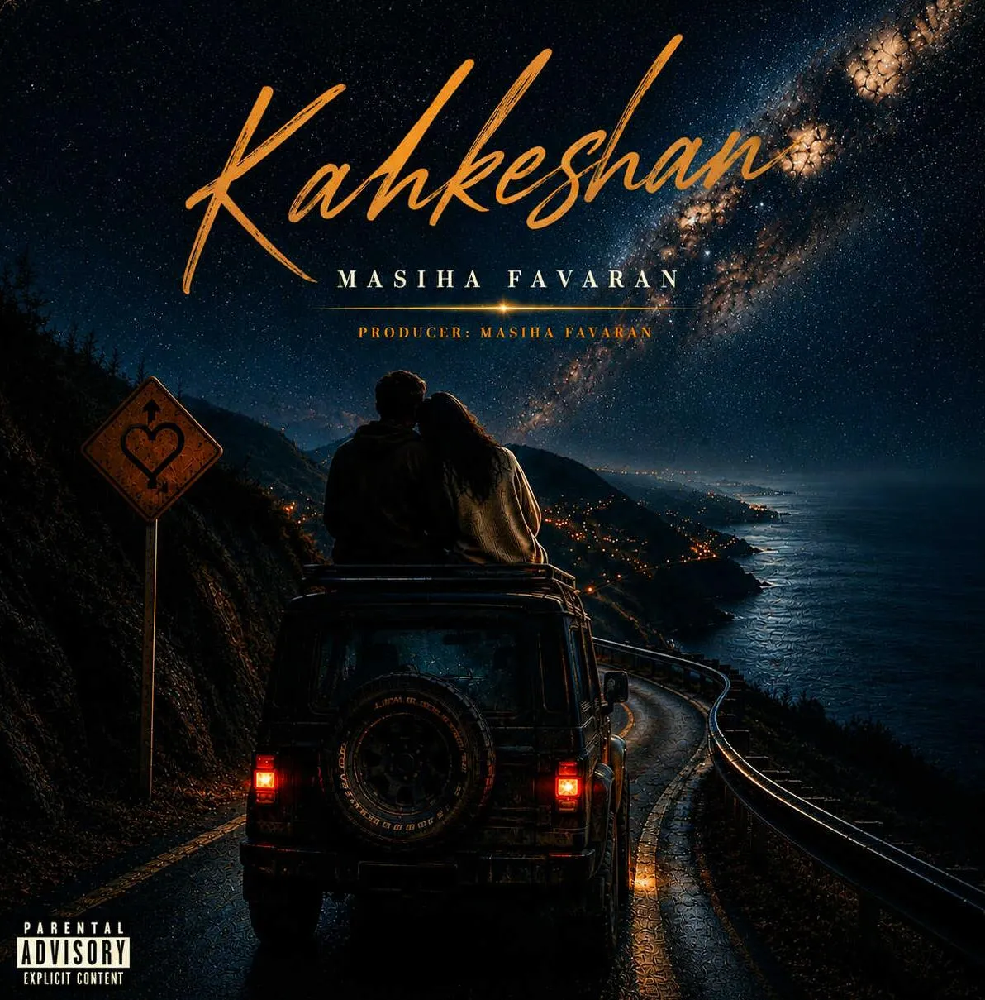

Download High Quality
بازدید: درحال محاسبه بازدید
Lyrics
Chorus
نیستی میبینمت همش توی راهرو
مرزعشقو رد کردم بدون پاسپورت
راهزندگیو باشی میرم آفرود
روحم پیشتوعه قلبم تو این کالبد
نیستی میبینمت همش توی راهرو
مرزعشقو رد کردم بدون پاسپورت
راهزندگیو باشی میرم آفرود
روحم پیشتوعه قلبم تو این کالبد
Verse
قبل تو فکر میکردم عشق فقط لفظیه
وجود خارجی نداره،توهم مغزیه
جادهقلبم پُر از پیچه تو عین گاردریل
همهکپیهمدیگهان،تو نسخه فابریکه
ماهو میخام چیکار وقتی چشمات کهکشانمه
بجز تو فقط در کنارمه
بودی بیشتر از چیزی که انتظارمه
میخوام تشبیهت کنم هرچی قشنگه استعارمه
من
بود کنارم وقتی بود حالم بد
بود کنارم وقتی همهشدن بامن بد
برا همینه دورتمیگردم ساعتگرد
Chorus
نیستی میبینمت همش توی راهرو
مرزعشقو رد کردم بدون پاسپورت
راهزندگیو باشی میرم آفرود
روحم پیشتوعه قلبم تو این کالبد
نیستی میبینمت همش توی راهرو
مرزعشقو رد کردم بدون پاسپورت
راهزندگیو باشی میرم آفرود
روحم پیشتوعه قلبم تو این کالبد
نیستی میبینمت همش توی راهرو
مرزعشقو رد کردم بدون پاسپورت
راهزندگیو باشی میرم آفرود
روحم پیشتوعه قلبم تو این کالبد